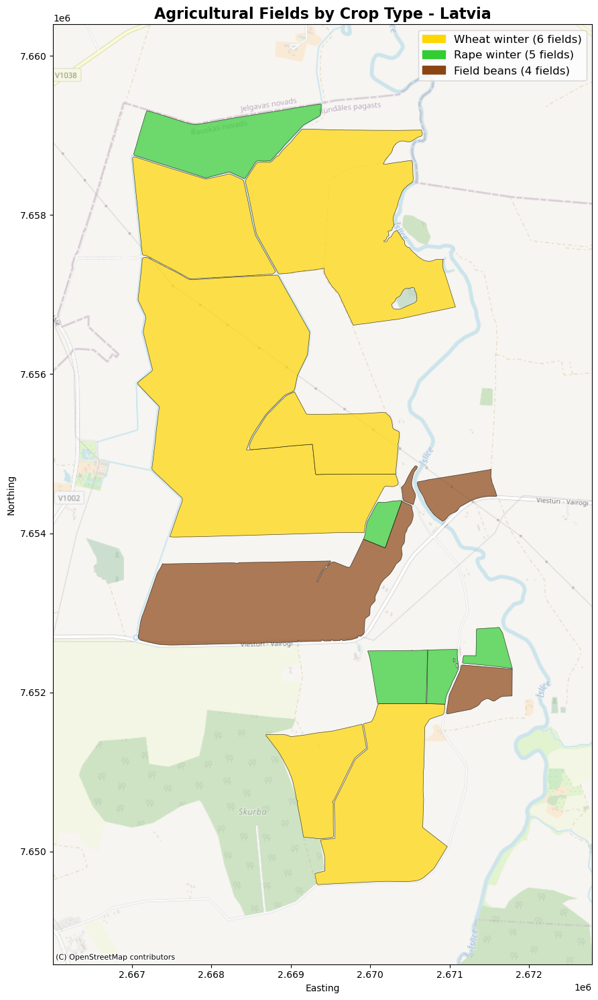
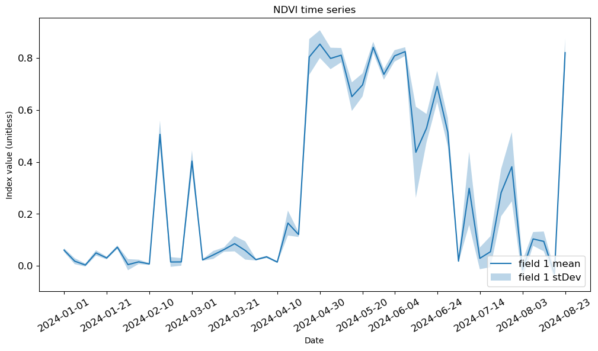
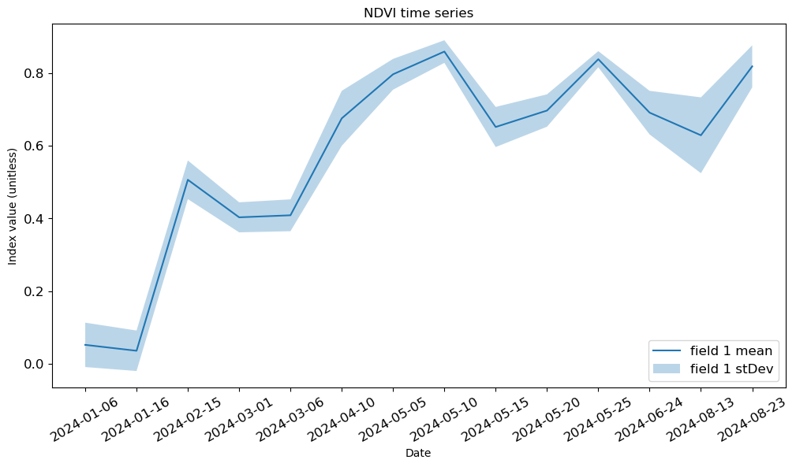
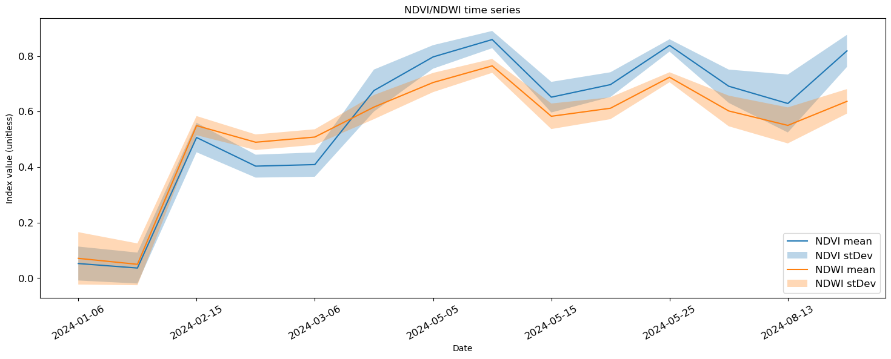
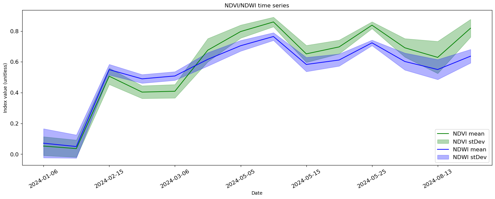
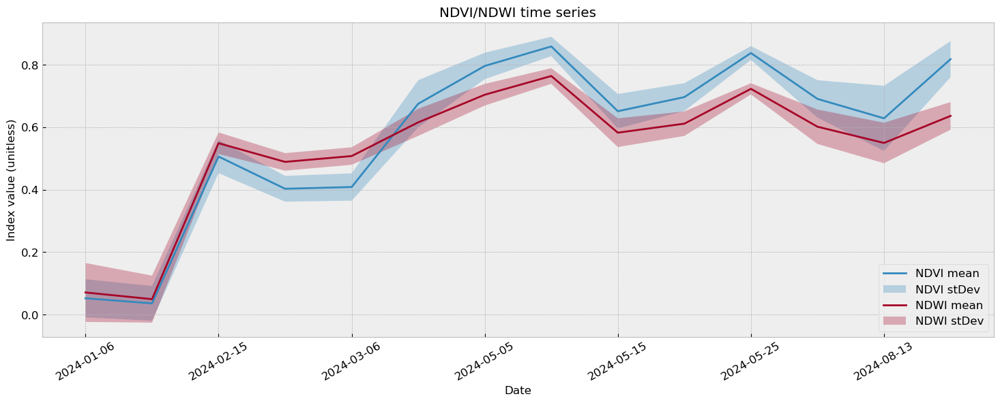
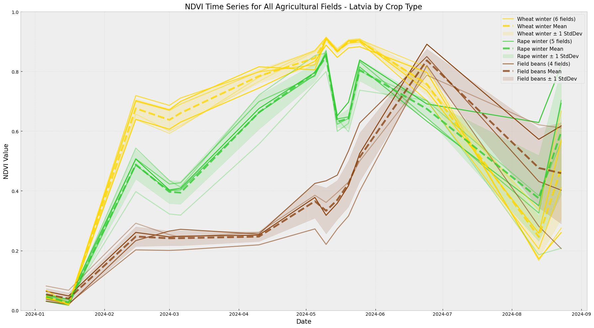

# Utilities
import getpass
import warnings
# Data Manipulation
import pandas as pd
import geopandas as gpd
import numpy as np
# Plotting
import matplotlib.pyplot as plt
import matplotlib.dates as mdates
from matplotlib.lines import Line2D
import matplotlib.patches as mpatches
import contextily as cx
# Sentinel Hub
from sentinelhub import (
SHConfig,
DataCollection,
SentinelHubStatistical,
SentinelHubStatisticalDownloadClient,
CRS,
Geometry,
parse_time,
)
warnings.filterwarnings("ignore", category=UserWarning) # Suppress specific warningsIntroduction to visualising basic time series with Statistical API outputs in Copernicus Data Space Ecosystem
Introduction to Statistical API
In the Process API examples, we have seen how to obtain satellite imagery. Statistical API can be used in a very similar way. The main difference is that the results of Statistical API are aggregated statistical values of satellite data instead of entire images. In many use cases, such values are all that we need. By using Statistical API we can avoid downloading and processing large amounts of satellite data. This can help save time and money, by expediting processing time and by avoiding consuming download quota.
All general rules for building evalscripts apply. However, there are some specifics when using evalscripts with the Statistical API:
- The
evaluatePixel()function must, in addition to other output, always return adataMaskoutput. This output defines which pixels are excluded from calculations. For more details and an example, see here. - The default value of sampleType is
FLOAT32. - The output.bands parameter in the setup() function can be an array. This makes it possible to specify custom names for the output bands and different output
dataMaskfor different outputs, see this example.
Python Library Imports
Helper Functions
# Helper Utility Functions
# define functions to extract statistics for all acquisition dates
def extract_stats(date, stat_data):
d = {}
for key, value in stat_data["outputs"].items():
stats = value["bands"]["B0"]["stats"]
if stats["sampleCount"] == stats["noDataCount"]:
continue
else:
d["date"] = [date]
for stat_name, stat_value in stats.items():
if stat_name == "sampleCount" or stat_name == "noDataCount":
continue
else:
d[f"{key}_{stat_name}"] = [stat_value]
return pd.DataFrame(d)
def read_acquisitions_stats(stat_data):
df_li = []
for aq in stat_data:
date = aq["interval"]["from"][:10]
df_li.append(extract_stats(date, aq))
return pd.concat(df_li)
def stats_to_df(stats_data):
"""Transform Statistical API response into a pandas.DataFrame"""
df_data = []
for single_data in stats_data["data"]:
df_entry = {}
is_valid_entry = True
df_entry["interval_from"] = parse_time(single_data["interval"]["from"]).date()
df_entry["interval_to"] = parse_time(single_data["interval"]["to"]).date()
for output_name, output_data in single_data["outputs"].items():
for band_name, band_values in output_data["bands"].items():
band_stats = band_values["stats"]
if band_stats["sampleCount"] == band_stats["noDataCount"]:
is_valid_entry = False
break
for stat_name, value in band_stats.items():
col_name = f"{output_name}_{band_name}_{stat_name}"
if stat_name == "percentiles":
for perc, perc_val in value.items():
perc_col_name = f"{col_name}_{perc}"
df_entry[perc_col_name] = perc_val
else:
df_entry[col_name] = value
if is_valid_entry:
df_data.append(df_entry)
return pd.DataFrame(df_data)Credentials
Credentials for Sentinel Hub services (client_id & client_secret) can be obtained in your Dashboard. In the User Settings you can create a new OAuth Client to generate these credentials. For more detailed instructions, visit the relevant documentation page.
Now that you have your client_id & client_secret, it is recommended to configure a new profile in your Sentinel Hub Python package. Instructions on how to configure your Sentinel Hub Python package can be found here. Using these instructions you can create a profile specific to using the package for accessing Copernicus Data Space Ecosystem data collections. This is useful as changes to the the config class are usually only temporary in your notebook and by saving the configuration to your profile you won’t need to generate new credentials or overwrite/change the default profile each time you rerun or write a new Jupyter Notebook.
If you are a first time user of the Sentinel Hub Python package for Copernicus Data Space Ecosystem, you should create a profile specific to the Copernicus Data Space Ecosystem. You can do this in the following cell:
# Only run this cell if you have not created a configuration.
config = SHConfig()
# config.sh_client_id = getpass.getpass("Enter your SentinelHub client id")
# config.sh_client_secret = getpass.getpass("Enter your SentinelHub client secret")
config.sh_token_url = "https://identity.dataspace.copernicus.eu/auth/realms/CDSE/protocol/openid-connect/token"
config.sh_base_url = "https://sh.dataspace.copernicus.eu"
# config.save("cdse")Enter your SentinelHub client id ········
Enter your SentinelHub client secret ········However, if you have already configured a profile in Sentinel Hub Python for the Copernicus Data Space Ecosystem, then you can run the below cell entering the profile name as a string replacing <profile_name>.
# config = SHConfig("cdse")Creating a field of interest
Firstly, we will define some fields of interest in Latvia for the examples. These fields have been extracted from the Field Boundaries for Latvia, provided by Eurocrops dataset. We will use the Sentinel-2 L2A data collection in the first examples though.
# Load the Latvia agricultural field boundaries with crop types
fields_gdf = gpd.read_file(
"/home/jovyan/samples/sentinelhub/data/latvia_fields_wgs84.geojson"
)
# Convert fields to Web Mercator for proper basemap alignment
fields_gdf_wm = fields_gdf.to_crs(epsg=3857)
# Create a figure to visualize the three crop types
fig, ax = plt.subplots(figsize=(15, 15))
# Define colors for each crop type
crop_colors = {
"Wheat winter": "#FFD700", # Gold
"Rape winter": "#32CD32", # Lime green
"Field beans": "#8B4513", # Saddle brown
}
# Plot each crop type with different colors
legend_handles = []
for crop_type, color in crop_colors.items():
crop_fields = fields_gdf_wm[fields_gdf_wm["crop:name_en"] == crop_type]
if len(crop_fields) > 0:
plot = crop_fields.plot(
ax=ax, color=color, alpha=0.7, edgecolor="black", linewidth=0.5
)
# Create a manual legend entry
patch = mpatches.Patch(
color=color, label=f"{crop_type} ({len(crop_fields)} fields)"
)
legend_handles.append(patch)
# Set the axis limits to the bounds of the fields (with valid bounds now)
bounds = fields_gdf_wm.total_bounds
if np.isfinite(bounds).all():
buffer = 1000 # 1km buffer around fields
ax.set_xlim(bounds[0] - buffer, bounds[2] + buffer)
ax.set_ylim(bounds[1] - buffer, bounds[3] + buffer)
# Add basemap for context
try:
cx.add_basemap(
ax, crs=fields_gdf_wm.crs, source=cx.providers.OpenStreetMap.Mapnik, alpha=0.6
)
except Exception as e:
print(f"Could not add basemap: {e}")
# Add legend manually
if legend_handles:
ax.legend(handles=legend_handles, loc="upper right", fontsize=12)
# Set title and labels
ax.set_title(
"Agricultural Fields by Crop Type - Latvia", fontsize=16, fontweight="bold"
)
ax.set_xlabel("Easting")
ax.set_ylabel("Northing")
plt.tight_layout()
plt.show()
1. How to create an NDVI time series for a field of interest
The Evalscript
In this evalscript, we are calculating NDVI. Let’s remind ourselves that evalscripts operate slightly differently with Statistical API:
- The
evaluatePixel()function must, in addition to other output, always return adataMaskoutput. This output defines which pixels are excluded from calculations. For more details and an example, see here. - The default value of sampleType is
FLOAT32. - The output.bands parameter in the setup() function can be an array. This makes it possible to specify custom names for the output bands and different output
dataMaskfor different outputs, see this example.
evalscript = """
//VERSION=3
function setup() {
return {
input: [{
bands: [
"B04",
"B08",
"dataMask"
]
}],
output: [
{
id: "ndvi",
bands: 1
},
{
id: "dataMask",
bands: 1
}]
};
}
function evaluatePixel(samples) {
let index = (samples.B08 - samples.B04) / (samples.B08+ samples.B04);
return {
ndvi: [index],
dataMask: [samples.dataMask],
};
}
"""The Request Body
Now we have defined the evalscript and the fields of interest, we can build the first Statistical API Request, before returning the response for the first field. In this request, as part of the payload we define some input parameters: - time_interval this defines the time range of our request. - aggregation_interval this defines the length of time each interval is. In this case, the interval is 5 days. The aggregation intervals should be at least one day long (e.g. “P5D”, “P30D”). You can only use period OR time designator not both.
NOTE: If time_interval is not divisible by an aggregationInterval, the last (“not full”) time interval will be dismissed by default (SKIP option). The user can instead set the lastIntervalBehavior to SHORTEN (shortens the last interval so that it ends at the end of the provided time range) or EXTEND (extends the last interval over the end of the provided time range so that all the intervals are of equal duration).
geometry = Geometry(geometry=fields_gdf.geometry.iloc[0], crs=CRS.WGS84)
request = SentinelHubStatistical(
aggregation=SentinelHubStatistical.aggregation(
evalscript=evalscript,
time_interval=("2024-01-01", "2024-08-31"),
aggregation_interval="P5D",
resolution=(0.0001, 0.0001),
),
input_data=[
SentinelHubStatistical.input_data(
DataCollection.SENTINEL2_L2A.define_from(
"s2l2a", service_url=config.sh_base_url
),
),
],
geometry=geometry,
config=config,
)
response1 = request.get_data()
# response1 # try uncommenting this line to see what the raw JSON response looks like.Manipulation and Visualisation of our Output
However, as it is clear to see, our response is not that useful in json format. It’s difficult to read from a human perspective. So, let’s transform it into a pandas dataframe. To help us achieve this, let’s call some helper functions.
result_df1 = read_acquisitions_stats(response1[0]["data"])
result_df1| date | ndvi_min | ndvi_max | ndvi_mean | ndvi_stDev | |
|---|---|---|---|---|---|
| 0 | 2024-01-01 | 0.039626 | 0.085862 | 0.060313 | 0.007123 |
| 0 | 2024-01-06 | -0.011221 | 0.059024 | 0.017729 | 0.011538 |
| 0 | 2024-01-11 | -0.019038 | 0.022968 | 0.002753 | 0.005882 |
| 0 | 2024-01-16 | 0.020243 | 0.078389 | 0.049420 | 0.010174 |
| 0 | 2024-01-21 | 0.014553 | 0.047619 | 0.030043 | 0.005411 |
| 0 | 2024-01-26 | 0.053322 | 0.092271 | 0.071643 | 0.006668 |
| 0 | 2024-01-31 | -0.053637 | 0.098853 | 0.004256 | 0.021395 |
| 0 | 2024-02-05 | -0.006281 | 0.044510 | 0.015084 | 0.008504 |
| 0 | 2024-02-10 | -0.006897 | 0.018182 | 0.006931 | 0.003663 |
| 0 | 2024-02-15 | 0.298934 | 0.643664 | 0.506468 | 0.053178 |
| 0 | 2024-02-20 | -0.043752 | 0.049255 | 0.014570 | 0.018693 |
| 0 | 2024-02-25 | -0.019051 | 0.057595 | 0.014899 | 0.014775 |
| 0 | 2024-03-01 | 0.294407 | 0.582432 | 0.403234 | 0.041293 |
| 0 | 2024-03-06 | 0.012346 | 0.033613 | 0.022521 | 0.003133 |
| 0 | 2024-03-11 | -0.004208 | 0.083908 | 0.041817 | 0.015418 |
| 0 | 2024-03-16 | 0.042683 | 0.086362 | 0.062349 | 0.008451 |
| 0 | 2024-03-21 | 0.034307 | 0.203316 | 0.085064 | 0.029561 |
| 0 | 2024-03-26 | -0.019080 | 0.172109 | 0.058885 | 0.035156 |
| 0 | 2024-03-31 | 0.014652 | 0.034546 | 0.023669 | 0.003395 |
| 0 | 2024-04-05 | 0.021538 | 0.047033 | 0.034320 | 0.004394 |
| 0 | 2024-04-10 | 0.003357 | 0.034156 | 0.014220 | 0.003691 |
| 0 | 2024-04-15 | 0.094274 | 0.343164 | 0.164678 | 0.048042 |
| 0 | 2024-04-20 | 0.085931 | 0.156616 | 0.120259 | 0.009418 |
| 0 | 2024-04-25 | 0.469509 | 0.868938 | 0.804631 | 0.068944 |
| 0 | 2024-04-30 | 0.554804 | 0.898510 | 0.854171 | 0.053389 |
| 0 | 2024-05-05 | 0.598023 | 0.834915 | 0.798928 | 0.041354 |
| 0 | 2024-05-10 | 0.645474 | 0.881050 | 0.811559 | 0.027569 |
| 0 | 2024-05-15 | 0.584005 | 0.876204 | 0.651758 | 0.055170 |
| 0 | 2024-05-20 | 0.641223 | 0.897581 | 0.696997 | 0.044556 |
| 0 | 2024-05-25 | 0.684843 | 0.903038 | 0.841872 | 0.021389 |
| 0 | 2024-05-30 | 0.663320 | 0.804042 | 0.737575 | 0.020622 |
| 0 | 2024-06-04 | 0.733289 | 0.886670 | 0.808704 | 0.022116 |
| 0 | 2024-06-09 | 0.750170 | 0.895938 | 0.825357 | 0.016743 |
| 0 | 2024-06-14 | 0.127962 | 0.833052 | 0.437369 | 0.175552 |
| 0 | 2024-06-19 | 0.385489 | 0.692556 | 0.530225 | 0.054855 |
| 0 | 2024-06-24 | 0.610953 | 0.898808 | 0.691211 | 0.060009 |
| 0 | 2024-06-29 | 0.449582 | 0.706274 | 0.514170 | 0.054955 |
| 0 | 2024-07-04 | 0.002191 | 0.028530 | 0.017886 | 0.004792 |
| 0 | 2024-07-09 | 0.086803 | 0.775554 | 0.298431 | 0.141286 |
| 0 | 2024-07-14 | -0.124324 | 0.288824 | 0.028574 | 0.041777 |
| 0 | 2024-07-19 | -0.157510 | 0.341208 | 0.054164 | 0.059706 |
| 0 | 2024-07-24 | 0.183952 | 0.661563 | 0.281891 | 0.091081 |
| 0 | 2024-07-29 | 0.202074 | 0.881091 | 0.381594 | 0.133418 |
| 0 | 2024-08-03 | -0.062348 | 0.203195 | -0.015490 | 0.034957 |
| 0 | 2024-08-08 | 0.024943 | 0.171276 | 0.103389 | 0.026575 |
| 0 | 2024-08-13 | 0.001068 | 0.252900 | 0.093866 | 0.038081 |
| 0 | 2024-08-18 | -0.098878 | 0.007152 | -0.032035 | 0.016628 |
| 0 | 2024-08-23 | 0.432331 | 0.890411 | 0.821336 | 0.055567 |
We can take this another step further, and display the data in a time series using the Matplotlib python library:
fig_stat, ax_stat = plt.subplots(1, 1, figsize=(12, 6))
# Extract data
t1 = result_df1["date"]
ndvi_mean_field1 = result_df1["ndvi_mean"]
ndvi_std_field1 = result_df1["ndvi_stDev"]
# Plot mean and standard deviation
ax_stat.plot(t1, ndvi_mean_field1, label="field 1 mean")
ax_stat.fill_between(
t1,
ndvi_mean_field1 - ndvi_std_field1,
ndvi_mean_field1 + ndvi_std_field1,
alpha=0.3,
label="field 1 stDev",
)
# Set tick parameters
ax_stat.tick_params(axis="x", labelrotation=30, labelsize=12)
ax_stat.tick_params(axis="y", labelsize=12)
# Reduce number of x-tick labels
ax_stat.xaxis.set_major_locator(mdates.AutoDateLocator(maxticks=20))
# Set labels and title
ax_stat.set(xlabel="Date", ylabel="Index value (unitless)", title="NDVI time series")
# Set legend
ax_stat.legend(loc="lower right", prop={"size": 12});
2. Removing cloudy acquisitions from your NDVI time series
However, not filtering out the cloudy acquisitions means we have a very noisy time series which is not reflective of the NDVI values on the land surface. In the second example, we will filter out the cloudiest acquisitions.
The Evalscript
This stays the same as the previous example, so we do not need to redefine it here.
The Request Body
The request is only slightly adjusted from previously. We have added an additional argument:
other_args={"dataFilter": {"maxCloudCoverage": 10}},This will filter our data and means we will only use Sentinel-2 data where the cloud cover percentage of the scene was below 10%
geometry = Geometry(geometry=fields_gdf.geometry.iloc[0], crs=CRS.WGS84)
request = SentinelHubStatistical(
aggregation=SentinelHubStatistical.aggregation(
evalscript=evalscript,
time_interval=("2024-01-01", "2024-08-31"),
aggregation_interval="P5D",
resolution=(0.0001, 0.0001),
),
input_data=[
SentinelHubStatistical.input_data(
DataCollection.SENTINEL2_L2A.define_from(
"s2l2a", service_url=config.sh_base_url
),
other_args={"dataFilter": {"maxCloudCoverage": 10}},
),
],
geometry=geometry,
config=config,
)
response1 = request.get_data()Manipulation and Visualisation of our Output
result_df1 = read_acquisitions_stats(response1[0]["data"])
result_df1| date | ndvi_min | ndvi_max | ndvi_mean | ndvi_stDev | |
|---|---|---|---|---|---|
| 0 | 2024-01-06 | -0.044162 | 0.318167 | 0.052375 | 0.061076 |
| 0 | 2024-01-16 | -0.050464 | 0.311673 | 0.036106 | 0.055683 |
| 0 | 2024-02-15 | 0.298934 | 0.643664 | 0.506468 | 0.053178 |
| 0 | 2024-03-01 | 0.294407 | 0.582432 | 0.403234 | 0.041293 |
| 0 | 2024-03-06 | 0.291190 | 0.603629 | 0.408860 | 0.043832 |
| 0 | 2024-04-10 | 0.379592 | 0.786089 | 0.675602 | 0.075629 |
| 0 | 2024-05-05 | 0.603747 | 0.833644 | 0.796775 | 0.042368 |
| 0 | 2024-05-10 | 0.691011 | 0.908206 | 0.859290 | 0.031086 |
| 0 | 2024-05-15 | 0.584005 | 0.876204 | 0.651758 | 0.055170 |
| 0 | 2024-05-20 | 0.641223 | 0.897581 | 0.696997 | 0.044556 |
| 0 | 2024-05-25 | 0.721498 | 0.892559 | 0.838204 | 0.022243 |
| 0 | 2024-06-24 | 0.610953 | 0.898808 | 0.691211 | 0.060009 |
| 0 | 2024-08-13 | 0.327018 | 0.869386 | 0.628954 | 0.104324 |
| 0 | 2024-08-23 | 0.469887 | 0.892148 | 0.818540 | 0.057876 |
We can take this another step further, and display the data in a time series using the Matplotlib python library:
fig_stat, ax_stat = plt.subplots(1, 1, figsize=(12, 6))
# Extract data
t1 = result_df1["date"]
ndvi_mean_field1 = result_df1["ndvi_mean"]
ndvi_std_field1 = result_df1["ndvi_stDev"]
# Plot mean and standard deviation
ax_stat.plot(t1, ndvi_mean_field1, label="field 1 mean")
ax_stat.fill_between(
t1,
ndvi_mean_field1 - ndvi_std_field1,
ndvi_mean_field1 + ndvi_std_field1,
alpha=0.3,
label="field 1 stDev",
)
# Set tick parameters
ax_stat.tick_params(axis="x", labelrotation=30, labelsize=12)
ax_stat.tick_params(axis="y", labelsize=12)
# Reduce number of x-tick labels
ax_stat.xaxis.set_major_locator(mdates.AutoDateLocator(maxticks=20))
# Set labels and title
ax_stat.set(xlabel="Date", ylabel="Index value (unitless)", title="NDVI time series")
# Set legend
ax_stat.legend(loc="lower right", prop={"size": 12});
We now have a much smoother NDVI time series. We have fewer data points now though. In your own time, try experimenting with the cloud coverage filter and see if you can find the sweet point between the number of data points and smoothness of the time series plot.
3. Outputting multiple outputs from a single statistical API request
It is also possible to define multiple outputs from your evalscript. In this example, we generate NDVI and NDWI time series in the same request and then plot them on the same plot.
The Evalscript
evalscript = """
//VERSION=3
function setup() {
return {
input: [
{
bands: [
"B03",
"B04",
"B08",
"dataMask",
]
}
],
output: [
{
id: "ndvi",
bands: 1
},
{
id: "ndwi",
bands: 1
},
{
id: "dataMask",
bands: 1
}
]
}
}
function evaluatePixel(samples) {
return {
ndvi: [index(samples.B08, samples.B04)],
ndwi: [index(samples.B08, samples.B03)],
dataMask: [samples.dataMask]
};
}
"""The Request Body
field1 = fields_gdf.geometry.values[0]
geometry = Geometry(geometry=field1, crs=CRS.WGS84)
request = SentinelHubStatistical(
aggregation=SentinelHubStatistical.aggregation(
evalscript=evalscript,
time_interval=("2024-01-01", "2024-08-31"),
aggregation_interval="P5D",
resolution=(0.0001, 0.0001),
),
input_data=[
SentinelHubStatistical.input_data(
DataCollection.SENTINEL2_L2A.define_from(
"s2l2a", service_url=config.sh_base_url
),
other_args={"dataFilter": {"maxCloudCoverage": 10}},
),
],
geometry=geometry,
config=config,
)
response1 = request.get_data()Manipulation and Visualisation of our Output
result_df1 = read_acquisitions_stats(response1[0]["data"])
result_df1| date | ndvi_min | ndvi_max | ndvi_mean | ndvi_stDev | ndwi_min | ndwi_max | ndwi_mean | ndwi_stDev | |
|---|---|---|---|---|---|---|---|---|---|
| 0 | 2024-01-06 | -0.044162 | 0.318167 | 0.052375 | 0.061076 | -0.112622 | 0.403822 | 0.071027 | 0.094411 |
| 0 | 2024-01-16 | -0.050464 | 0.311673 | 0.036106 | 0.055683 | -0.084824 | 0.386497 | 0.049560 | 0.075300 |
| 0 | 2024-02-15 | 0.298934 | 0.643664 | 0.506468 | 0.053178 | 0.389950 | 0.689486 | 0.549236 | 0.034492 |
| 0 | 2024-03-01 | 0.294407 | 0.582432 | 0.403234 | 0.041293 | 0.410714 | 0.605670 | 0.489380 | 0.028114 |
| 0 | 2024-03-06 | 0.291190 | 0.603629 | 0.408860 | 0.043832 | 0.433906 | 0.618856 | 0.508071 | 0.028019 |
| 0 | 2024-04-10 | 0.379592 | 0.786089 | 0.675602 | 0.075629 | 0.440578 | 0.687075 | 0.616067 | 0.043519 |
| 0 | 2024-05-05 | 0.603747 | 0.833644 | 0.796775 | 0.042368 | 0.578172 | 0.739398 | 0.704546 | 0.034691 |
| 0 | 2024-05-10 | 0.691011 | 0.908206 | 0.859290 | 0.031086 | 0.628287 | 0.817219 | 0.764554 | 0.025065 |
| 0 | 2024-05-15 | 0.584005 | 0.876204 | 0.651758 | 0.055170 | 0.517241 | 0.763698 | 0.582941 | 0.046040 |
| 0 | 2024-05-20 | 0.641223 | 0.897581 | 0.696997 | 0.044556 | 0.563164 | 0.775281 | 0.611889 | 0.039340 |
| 0 | 2024-05-25 | 0.721498 | 0.892559 | 0.838204 | 0.022243 | 0.645356 | 0.798313 | 0.723492 | 0.017922 |
| 0 | 2024-06-24 | 0.610953 | 0.898808 | 0.691211 | 0.060009 | 0.537616 | 0.803340 | 0.602093 | 0.055173 |
| 0 | 2024-08-13 | 0.327018 | 0.869386 | 0.628954 | 0.104324 | 0.430229 | 0.776495 | 0.550068 | 0.064905 |
| 0 | 2024-08-23 | 0.469887 | 0.892148 | 0.818540 | 0.057876 | 0.485882 | 0.806563 | 0.636706 | 0.044159 |
fig_stat, ax_stat = plt.subplots(1, 1, figsize=(18, 6))
# Extract data
t = result_df1["date"]
ndvi_mean_field1 = result_df1["ndvi_mean"]
ndvi_std_field1 = result_df1["ndvi_stDev"]
ndwi_mean_field1 = result_df1["ndwi_mean"]
ndwi_std_field1 = result_df1["ndwi_stDev"]
# Plot NDVI mean and standard deviation
ax_stat.plot(t, ndvi_mean_field1, label="NDVI mean")
ax_stat.fill_between(
t,
ndvi_mean_field1 - ndvi_std_field1,
ndvi_mean_field1 + ndvi_std_field1,
alpha=0.3,
label="NDVI stDev",
)
# Plot NDWI mean and standard deviation
ax_stat.plot(t, ndwi_mean_field1, label="NDWI mean")
ax_stat.fill_between(
t,
ndwi_mean_field1 - ndwi_std_field1,
ndwi_mean_field1 + ndwi_std_field1,
alpha=0.3,
label="NDWI stDev",
)
# Set tick parameters
ax_stat.tick_params(axis="x", labelrotation=30, labelsize=12)
ax_stat.tick_params(axis="y", labelsize=12)
# Reduce number of x-tick labels
ax_stat.xaxis.set_major_locator(mdates.AutoDateLocator(maxticks=10))
# Set labels and title
ax_stat.set(
xlabel="Date", ylabel="Index value (unitless)", title="NDVI/NDWI time series"
)
# Set legend
ax_stat.legend(loc="lower right", prop={"size": 12})
plt.show()
4. Side Quest! Fine tuning the Color Palettes in Matplotlib and even the theme!
As we start to make more complex plots we may want to make them more colorful or if it is for an academic publication less colorful. With Matplotlib, there is the flexibility to either change the colors of different time series or even use a completely different theme. So let’s get to it! We’ll use the previous example as our test dummy:
Changing colors:
This one is easy, we have two functions for each of our dataseries called ax_stat.plot() and ax_stat.fill_between(). We can add an extra input to the function called color and after the = sign you can then type in your color as a string. You can find these colors by visiting this page. In the example below we have changed the NDVI data series to be green and the NDWI data series to be blue. This makes more sense than in the previous visualisation. In addition, in the ax_stat.fill_between() function there is an alpha input; this defines how transparent the standard deviation data series is.
fig_stat, ax_stat = plt.subplots(1, 1, figsize=(18, 6))
# Extract data
t = result_df1["date"]
ndvi_mean_field1 = result_df1["ndvi_mean"]
ndvi_std_field1 = result_df1["ndvi_stDev"]
ndwi_mean_field1 = result_df1["ndwi_mean"]
ndwi_std_field1 = result_df1["ndwi_stDev"]
# Plot NDVI mean and standard deviation
ax_stat.plot(t, ndvi_mean_field1, label="NDVI mean", color="green")
ax_stat.fill_between(
t,
ndvi_mean_field1 - ndvi_std_field1,
ndvi_mean_field1 + ndvi_std_field1,
color="green",
alpha=0.3,
label="NDVI stDev",
)
# Plot NDWI mean and standard deviation
ax_stat.plot(t, ndwi_mean_field1, label="NDWI mean", color="blue")
ax_stat.fill_between(
t,
ndwi_mean_field1 - ndwi_std_field1,
ndwi_mean_field1 + ndwi_std_field1,
color="blue",
alpha=0.3,
label="NDWI stDev",
)
# Set tick parameters
ax_stat.tick_params(axis="x", labelrotation=30, labelsize=12)
ax_stat.tick_params(axis="y", labelsize=12)
# Reduce number of x-tick labels
ax_stat.xaxis.set_major_locator(mdates.AutoDateLocator(maxticks=10))
# Set labels and title
ax_stat.set(
xlabel="Date", ylabel="Index value (unitless)", title="NDVI/NDWI time series"
)
# Set legend
ax_stat.legend(loc="lower right", prop={"size": 12})
plt.show()
Changing the style of your plots
You can also change the theme of your plots too using some predefined styles found as part of the python library. You can use the following function to return back all the different styles available to you. You can preview those styles on this reference page.
plt.style.available['Solarize_Light2',
'_classic_test_patch',
'_mpl-gallery',
'_mpl-gallery-nogrid',
'bmh',
'classic',
'dark_background',
'fast',
'fivethirtyeight',
'ggplot',
'grayscale',
'petroff10',
'seaborn-v0_8',
'seaborn-v0_8-bright',
'seaborn-v0_8-colorblind',
'seaborn-v0_8-dark',
'seaborn-v0_8-dark-palette',
'seaborn-v0_8-darkgrid',
'seaborn-v0_8-deep',
'seaborn-v0_8-muted',
'seaborn-v0_8-notebook',
'seaborn-v0_8-paper',
'seaborn-v0_8-pastel',
'seaborn-v0_8-poster',
'seaborn-v0_8-talk',
'seaborn-v0_8-ticks',
'seaborn-v0_8-white',
'seaborn-v0_8-whitegrid',
'tableau-colorblind10']Once you have decided on the style you want you can use the below function to implement it. Let’s use the bmh theme for the rest of the notebook.
plt.style.use("bmh")We can plot the time series again with the new style:
fig_stat, ax_stat = plt.subplots(1, 1, figsize=(18, 6))
# Extract data
t = result_df1["date"]
ndvi_mean_field1 = result_df1["ndvi_mean"]
ndvi_std_field1 = result_df1["ndvi_stDev"]
ndwi_mean_field1 = result_df1["ndwi_mean"]
ndwi_std_field1 = result_df1["ndwi_stDev"]
# Plot NDVI mean and standard deviation
ax_stat.plot(t, ndvi_mean_field1, label="NDVI mean")
ax_stat.fill_between(
t,
ndvi_mean_field1 - ndvi_std_field1,
ndvi_mean_field1 + ndvi_std_field1,
alpha=0.3,
label="NDVI stDev",
)
# Plot NDWI mean and standard deviation
ax_stat.plot(t, ndwi_mean_field1, label="NDWI mean")
ax_stat.fill_between(
t,
ndwi_mean_field1 - ndwi_std_field1,
ndwi_mean_field1 + ndwi_std_field1,
alpha=0.3,
label="NDWI stDev",
)
# Set tick parameters
ax_stat.tick_params(axis="x", labelrotation=30, labelsize=12)
ax_stat.tick_params(axis="y", labelsize=12)
# Reduce number of x-tick labels
ax_stat.xaxis.set_major_locator(mdates.AutoDateLocator(maxticks=10))
# Set labels and title
ax_stat.set(
xlabel="Date", ylabel="Index value (unitless)", title="NDVI/NDWI time series"
)
# Set legend
ax_stat.legend(loc="lower right", prop={"size": 12})
plt.show()
5. Making Multiple Requests to compare several fields of interest
Now that we have learnt how to plot the data for the first field, let’s take this another step forward and compare the NDVI time series of all the fields in our dataset. We will now run the same request for our second field and then transform the response into a second Pandas dataframe.
The Evalscript
evalscript = """
//VERSION=3
function setup() {
return {
input: [{
bands: [
"B04",
"B08",
"dataMask"
]
}],
output: [
{
id: "ndvi",
bands: 1
},
{
id: "dataMask",
bands: 1
}]
};
}
function evaluatePixel(samples) {
let index = (samples.B08 - samples.B04) / (samples.B08+ samples.B04);
return {
ndvi: [index],
dataMask: [samples.dataMask],
};
}
"""The Request Body
yearly_time_interval = "2024-01-01", "2024-08-31"
aggregation = SentinelHubStatistical.aggregation(
evalscript=evalscript,
time_interval=yearly_time_interval,
aggregation_interval="P5D",
resolution=(0.0001, 0.0001),
)
input_data = SentinelHubStatistical.input_data(
DataCollection.SENTINEL2_L2A.define_from("s2l2a", service_url=config.sh_base_url),
maxcc=0.1,
)
ndvi_requests = []
for geo_shape in fields_gdf.geometry.values:
request = SentinelHubStatistical(
aggregation=aggregation,
input_data=[input_data],
geometry=Geometry(geo_shape, crs=CRS(fields_gdf.crs)),
config=config,
)
ndvi_requests.append(request)%%time
download_requests = [ndvi_request.download_list[0] for ndvi_request in ndvi_requests]
client = SentinelHubStatisticalDownloadClient(config=config)
ndvi_stats = client.download(download_requests)
len(ndvi_stats)CPU times: user 181 ms, sys: 25 ms, total: 206 ms
Wall time: 2.44 s15Manipulation and Visualisation of our Output
ndvi_dfs = [
stats_to_df(polygon_stats).assign(id=id)
for polygon_stats, id in zip(ndvi_stats, fields_gdf["id"].values)
]
ndvi_df = pd.concat(ndvi_dfs)
ndvi_df| interval_from | interval_to | ndvi_B0_min | ndvi_B0_max | ndvi_B0_mean | ndvi_B0_stDev | ndvi_B0_sampleCount | ndvi_B0_noDataCount | id | |
|---|---|---|---|---|---|---|---|---|---|
| 0 | 2024-01-06 | 2024-01-11 | -0.044162 | 0.318167 | 0.052375 | 0.061076 | 1482 | 497 | 4568929 |
| 1 | 2024-01-16 | 2024-01-21 | -0.050464 | 0.311673 | 0.036106 | 0.055683 | 1482 | 497 | 4568929 |
| 2 | 2024-02-15 | 2024-02-20 | 0.298934 | 0.643664 | 0.506468 | 0.053178 | 1482 | 497 | 4568929 |
| 3 | 2024-03-01 | 2024-03-06 | 0.294407 | 0.582432 | 0.403234 | 0.041293 | 1482 | 497 | 4568929 |
| 4 | 2024-03-06 | 2024-03-11 | 0.291190 | 0.603629 | 0.408860 | 0.043832 | 1482 | 497 | 4568929 |
| ... | ... | ... | ... | ... | ... | ... | ... | ... | ... |
| 9 | 2024-05-20 | 2024-05-25 | 0.301355 | 0.906214 | 0.429653 | 0.144344 | 432 | 188 | 5099775 |
| 10 | 2024-05-25 | 2024-05-30 | 0.374812 | 0.886484 | 0.499639 | 0.121463 | 432 | 188 | 5099775 |
| 11 | 2024-06-24 | 2024-06-29 | 0.420633 | 0.917431 | 0.787509 | 0.071211 | 432 | 188 | 5099775 |
| 12 | 2024-08-13 | 2024-08-18 | 0.436770 | 0.904595 | 0.621233 | 0.104172 | 432 | 188 | 5099775 |
| 13 | 2024-08-23 | 2024-08-28 | 0.437607 | 0.902453 | 0.610920 | 0.115803 | 432 | 188 | 5099775 |
210 rows × 9 columns
# Create a figure and axis with specified size
fig, ax = plt.subplots(figsize=(18, 10))
# Define colors for each crop type (same as map)
crop_colors = {
"Wheat winter": "#FFD700", # Gold
"Rape winter": "#32CD32", # Lime green
"Field beans": "#8B4513", # Saddle brown
}
# Create alpha variation for multiple fields of same crop type
alpha_values = [1.0, 0.8, 0.6, 0.4, 0.3]
# Counter for each crop type to vary alpha
crop_counters = {"Wheat winter": 0, "Rape winter": 0, "Field beans": 0}
# Store data for standard deviation calculation by crop type
crop_data = {"Wheat winter": [], "Rape winter": [], "Field beans": []}
# Extract the 'id' values from the GeoDataFrame
ids = fields_gdf["id"].values
# Plot individual field time series
for idx, field_id in enumerate(ids):
# Get crop type for this field
crop_type = fields_gdf[fields_gdf["id"] == field_id]["crop:name_en"].iloc[0]
# Skip if crop type not in our color mapping
if crop_type not in crop_colors:
continue
# Filter the DataFrame for the current field
series = ndvi_df[ndvi_df["id"] == field_id].copy()
if len(series) > 0:
# Get color and alpha for this field
color = crop_colors[crop_type]
alpha = alpha_values[crop_counters[crop_type] % len(alpha_values)]
crop_counters[crop_type] += 1
# Plot the NDVI mean for the current series
ax.plot(
series["interval_from"],
series["ndvi_B0_mean"],
color=color,
alpha=alpha,
linewidth=2,
label=f"{crop_type} - {field_id}"
if crop_counters[crop_type] <= 3
else None,
)
# Store data for standard deviation calculation
crop_data[crop_type].append(series)
# Calculate and plot standard deviation bands for each crop type
for crop_type, color in crop_colors.items():
if len(crop_data[crop_type]) > 1: # Need at least 2 fields to calculate std
# Find common dates across all fields of this crop type
all_dates = set()
for series in crop_data[crop_type]:
all_dates.update(series["interval_from"])
common_dates = sorted(list(all_dates))
# For each date, collect NDVI values from all fields of this crop type
date_means = []
date_stds = []
for date in common_dates:
values_for_date = []
for series in crop_data[crop_type]:
date_data = series[series["interval_from"] == date]
if len(date_data) > 0:
values_for_date.append(date_data["ndvi_B0_mean"].iloc[0])
if len(values_for_date) > 1:
date_means.append(np.mean(values_for_date))
date_stds.append(np.std(values_for_date))
elif len(values_for_date) == 1:
date_means.append(values_for_date[0])
date_stds.append(0)
else:
date_means.append(np.nan)
date_stds.append(np.nan)
# Convert to arrays and filter out NaN values
valid_indices = ~np.isnan(date_means)
if np.any(valid_indices):
valid_dates = [d for i, d in enumerate(common_dates) if valid_indices[i]]
valid_means = [m for i, m in enumerate(date_means) if valid_indices[i]]
valid_stds = [s for i, s in enumerate(date_stds) if valid_indices[i]]
# Plot standard deviation band
ax.fill_between(
valid_dates,
np.array(valid_means) - np.array(valid_stds),
np.array(valid_means) + np.array(valid_stds),
alpha=0.15,
color=color,
label=f"{crop_type} ± 1 StdDev",
)
# Plot mean line
ax.plot(
valid_dates,
valid_means,
color=color,
linewidth=4,
alpha=0.8,
linestyle="--",
label=f"{crop_type} Mean",
)
# Create legend with crop type groups, means, and std dev
legend_elements = []
for crop_type, color in crop_colors.items():
count = crop_counters[crop_type]
if count > 0:
# Individual fields
legend_elements.append(
Line2D(
[0],
[0],
color=color,
lw=2,
alpha=0.7,
label=f"{crop_type} ({count} fields)",
)
)
# Mean line and std dev (if more than 1 field)
if count > 1:
legend_elements.append(
Line2D(
[0],
[0],
color=color,
lw=4,
alpha=0.8,
linestyle="--",
label=f"{crop_type} Mean",
)
)
legend_elements.append(
mpatches.Patch(color=color, alpha=0.15, label=f"{crop_type} ± 1 StdDev")
)
ax.legend(handles=legend_elements, loc="upper right", fontsize=11)
# Formatting
ax.set_xlabel("Date", fontsize=14)
ax.set_ylabel("NDVI Value", fontsize=14)
ax.set_title(
"NDVI Time Series for All Agricultural Fields - Latvia by Crop Type", fontsize=16
)
ax.grid(True, alpha=0.3)
ax.set_ylim(0, 1)
plt.tight_layout()
plt.show()
Summary
Congratulations on completing the notebook! From this notebook you should have learned how to:
- Create an NDVI time series for a field of interest.
- Remove cloud acquisitions from your NDVI time series.
- Output multiple outputs from a single request.
- Customise the color palettes and themes of your plots.
- Make multiple requests to compare several fields of interest.
After running these examples you are now ready to go out there and start to really analyse your data whether from Statistical or Processing APIs! If you wish you can continue to more advanced examples in the Advanced_Statistical_Visualisations_with_Statistical_API.ipynb notebook.